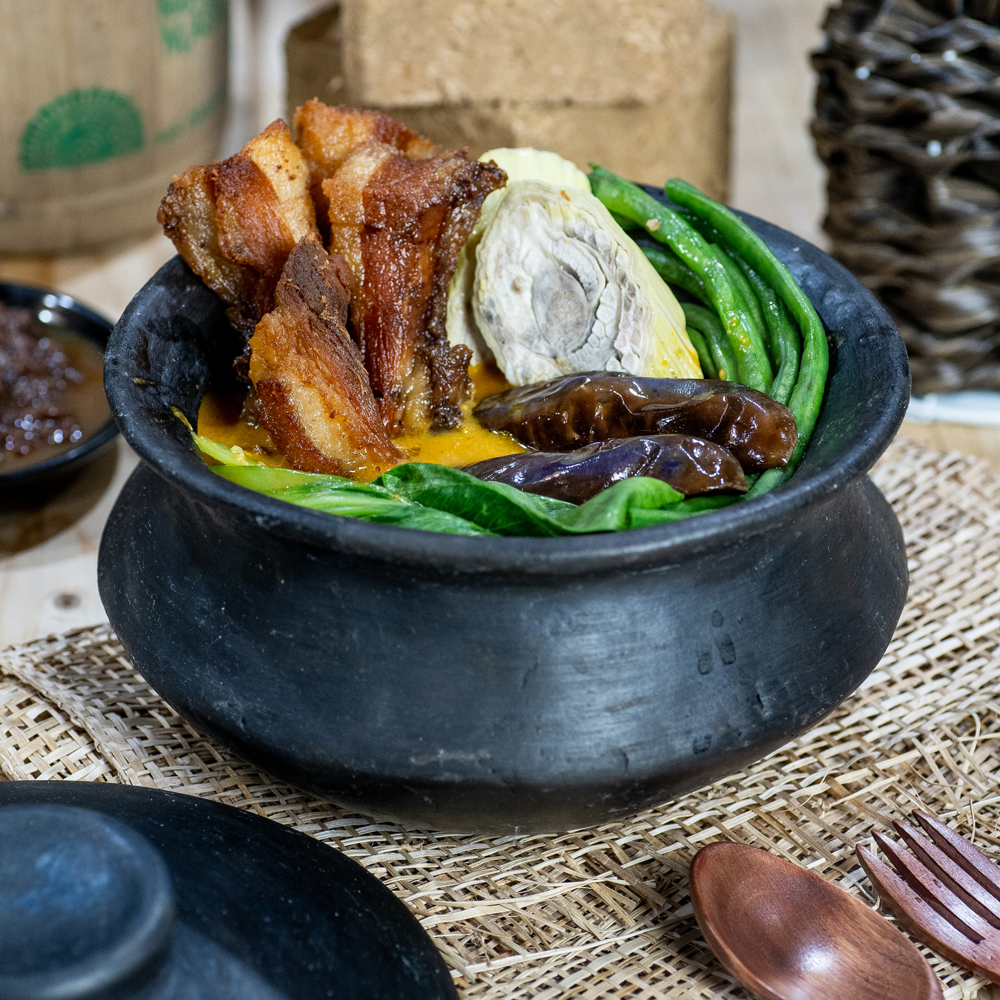

About Philippines
Why Choose Philippines?
Filipino food is more than just something to eat—it’s a reflection of the Filipino identity. Every dish carries the flavors of the Filipino history, shaped by indigenous traditions and the influences of Spanish, Chinese, and American cultures. From the comforting warmth of sinigang to the crispy indulgence of lechon, every bite tells a story of resilience, creativity, and tradition. Eating Filipino food isn’t just about satisfying hunger—it’s about experiencing the heart and soul of the Filipino culture.
.png)
But more than the flavors, what makes Filipino food special is how it brings people together. Whether it’s a feast for a celebration or a simple home-cooked meal, sharing food is a way for Filipinos to connect, show love, and create memories. Cooking for someone is an expression of care, and inviting someone to eat is an act of warmth and hospitality. By supporting and enjoying lutong Pinoy, Filipinos keep their culinary heritage alive and take pride in what makes their culture unique.
Foods
Hungry Yet?
Adobo
One of the most popular dishes in the Philippines, adobo is a dish cooked with soy sauce, vinegar, garlic, pepper, and bay leaves. It can be made with chicken, pork, or even seafood.
According to culinary experts, the best place to try adobo in the Philippines is Batangas province, as their version often includes turmeric, giving it a distinct yellow color and unique flavor profile, considered by many as the "authentic" adobo taste.


Sinigang
Sinigang is a popular Filipino dish known for its sour and savory flavor. It is traditionally made with pork, beef, shrimp, or fish, cooked in a tamarind-based broth with vegetables like kangkong (water spinach), radish, eggplant, and tomatoes.
Some of the best places to get sinigang in the Philippines include restaurants such as Sentro 1771 in Makati City, Bullchef in Pasig City, and Abe in Taguig, where chefs put their own twist on this classic dish while maintaining its signature sourness.
Dinakdakan
Dinakdakan or warek-warek is an Ilocano delicacy made with grilled pork parts such as the face, ears, liver, and tongue. It's traditionally served as a bar chow or pulutan to go with ice-cold beer but has evolved over the years into a hearty main dish enjoyed with piping-hot steamed rice.
Best places to get dinakdakan in the Philippines are from Gubat and Victorino's Restaurant in Quezon City, and GERARDA's in Bohol.
Lechon
Lechon is a famous Filipino dish consisting of a whole pig that is carefully seasoned, skewered on a large bamboo pole, and slowly roasted over an open charcoal fire. Traditionally, lechon is prepared with a variety of herbs and spices, such as garlic, lemongrass, bay leaves, and salt, which enhance its rich taste.
The Philippines has many good places to get lechon, such as House of Lechon and RICO'S LECHON in Cebu, Elar's Lechon in Metro Manila, and Tatoy's in Iloilo.
Sisig
A Filipino dish made from pork jowl and ears (maskara), pork belly, and chicken liver, which is usually seasoned with calamansi, onions, and chili peppers. It is a staple of Kapampangan cuisine in Luzon. The term also came to be used to a method of preparing fish and meat, especially pork, which is marinated in a sour liquid such as lemon juice or vinegar, then seasoned with salt, pepper, and other spices.
Some of the best places to get sisig in the Philippines include Bale Dutung, El Cirkulo, Sisig Hooray, Manam, and Aysee.
Laing
A Filipino dish of shredded or whole taro leaves with meat or seafood cooked in thick coconut milk spiced with labuyo chili, lemongrass, garlic, shallots, ginger, and shrimp paste. It originates from the Bicol Region, where it is known simply as pinangat.
Some places to get laing in the Philippines include restaurants, such as The Home of Authentic Laing in Marikina City, Bulalay Laing in Manila and lasty Sally's Bicol Express in Las Piñas.